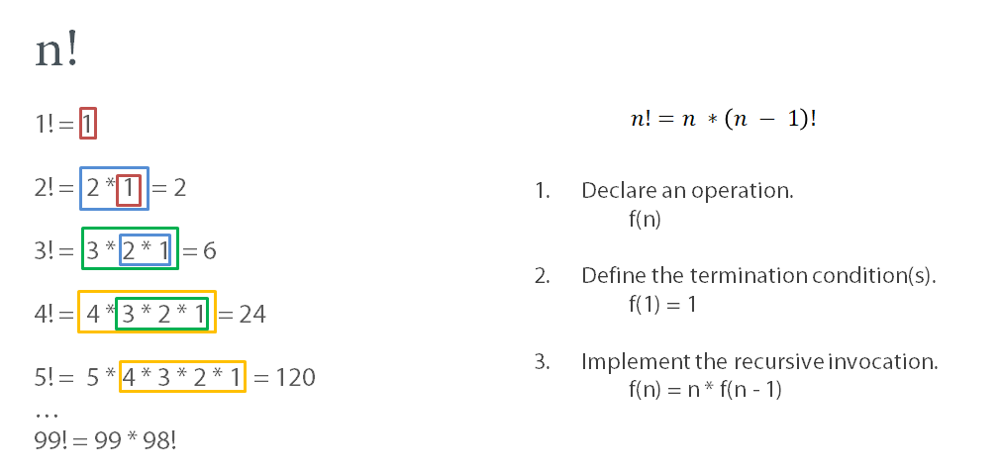
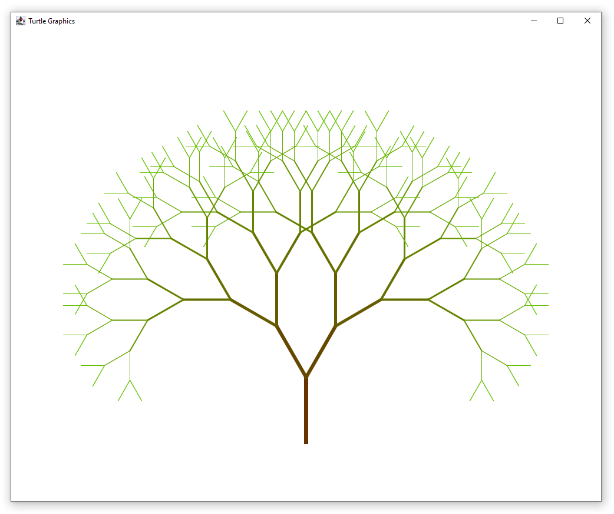
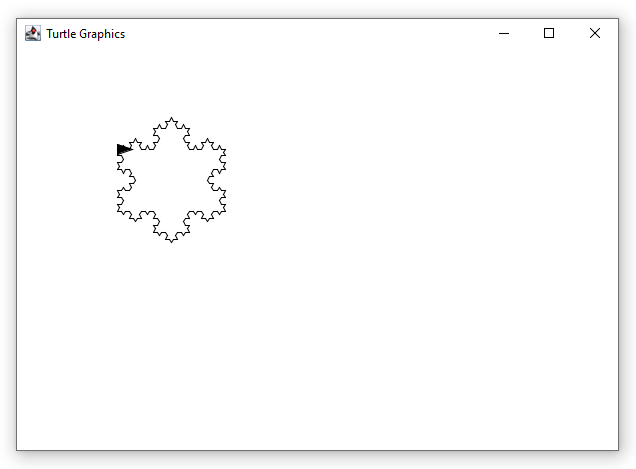

This page contains a set of excercises for the corresponding chapter.
Read the task description, copy the code template if present and solve it in your Eclipse.
If you are stuck, you can show the solution for this task. Be careful not to spoil the solution for yourself unnecessarily.
Implement the factorial function recursively.

Palindromes are words that read the same forwards as backwards, such as a, aa, aba or abba.
Strings like ab, aab or abca are not palindromes.
Your task is to implement a recursive operation which returns true if a string is a palindrome and false otherwise.
You can check if the first and last characters are equals, if not, it cannot be a palindrome.
If they are, check if the string between these characters is a palindrome.
A string that is only 1 or less characters longs, is definately a palindrome.
To get single character or substrings you can use the operation Strings.subString(str, startPos, endPos).
For example, Strings.subString("asdf", 0, 1) returns "as" as the result.
The index of the last character in a string is Strings.lengthOf(str) – 1.
Your task is to implement a filter functions which filters our integers from a list depending on a specific condition.
If the condition is true, the value remains in the filtered list, if not, the value is filtered out.
The condition is specified by a lambda expression, which accepts an integer and returns a boolean.
In the template below, you will already find one invocation of the filter function.
The condition is x mod 2 = 0, meaning the lambda expression will return true for all even numbers.
When we invoke filter passing it [1, 2, 3, 4, 5, 6, 7, 8, 9, 10] as well as this condition, we get [2, 4, 6, 8, 10] as a result.
The operation filter2 is the actual implementation of our filter function.
In addition to the list and the lambda expression, it accepts a filtered list and the current position in the unfiltered list.
The idea is to return the filtered list when i reaches the end of the unfiltered list.
As as it is not the case, we want to apply the lambda expression to the current entry in the list and move on to the next position recursively.
Test your implementation with additional conditions.
Filter out all even numbers.
Filter out all numbers less than 6.
The output of the program must be:
Draw a tree using Turtle and recursion to get the image below.
Start small by drawing without different colors and thickness, you can add them later.
The idea is: every tree consists of a trunk and two branches, each branch is also a tree but slightly shorter than its trunk.
Each branch has therefore also two branches, unless they their legth is reduced to a certain threshold.

Draw a Koch Snowflake (https://en.wikipedia.org/wiki/Koch_snowflake) using Turtle.
First try to draw a Koch Curve using recursion.
Arrange three Koch Curves in a triangle to create a Koch Snowflake.
